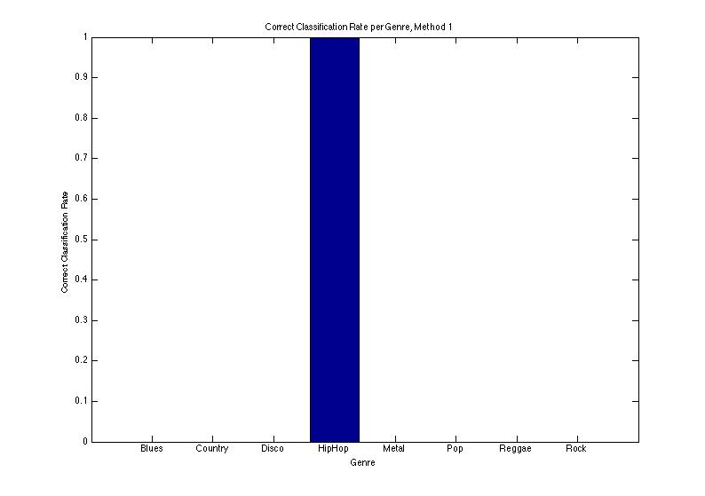
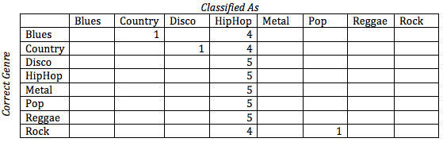
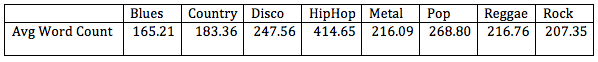
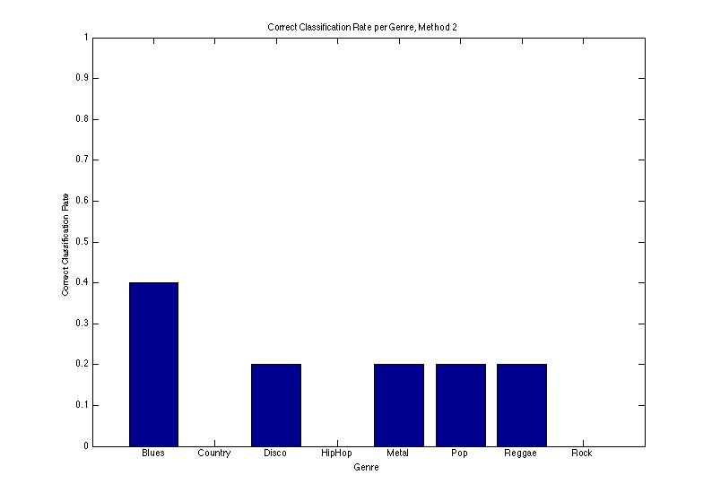
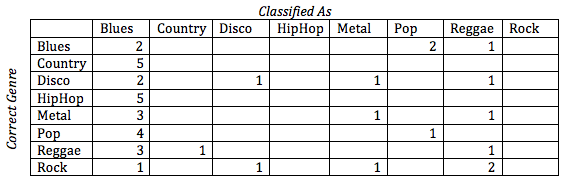
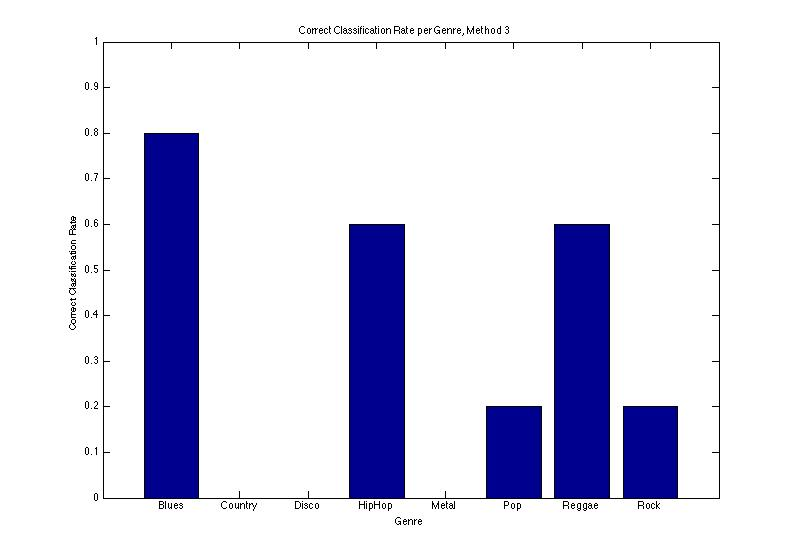
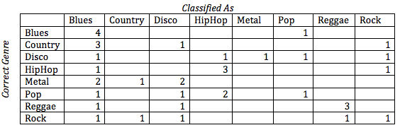
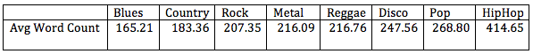

We're all seniors at Northwestern University, and this is our final project for EECS 349 Machine Learning with Professor Pardo at Northwestern University.
Genre classification is a somewhat popular topic for research, particularly in the field of Music Information Retrieval. There have been many papers published on methods for classifying genres using audio features and other methods. Our goal for this project was to conduct a comparative anlaysis between genre classification using low-level audio features and genre classification using lyrics. If the accuracy of lyric-based classification had proved to be significantly higher than using prior probability, we would have attempted to use boosting to combine these two classification methods to create a more powerful classifier, but our tests showed that a Naïve Bayesian classifier using lyrics fails to outperform prior probability by a statistically significant margin, so our genre classifier ultimately relied solely on analysis of low-level audio features.
Our interest in this topic arises primarily from a passion for music. The process of classifying genres with a machine learning method will reveal a lot about the fundamental characteristics of different genres and the underlying mathematical nature of all music.
Our work has many practical applications. For instance, it may be used for cataloguing music that is uploaded to a library, or as a basis for a song recommendation application. In theory, a major extension of this learning algorithm could even allow for computer construction of basic song forms for a particular genre. On a more theoretical note, this feature extraction and classification process also has the potential to reveal some of the characteristics, such as lyrical tendencies and audio features, that determine the way a song is perceived - in other words, the traits of a song that cause it to be associated with specific genres such as "rock" or "country". This knowledge has applications far beyond genre classification and could be used for many other applications, including song popularity predictors or automated music generators to name but a few examples.
In order to conduct a comparitive analysis of different classification methods, we approached genre classification from two completely different angles. The first approach utilized Music Information Retrieval (MIR) methods to extract audio features and use these features to train a Bayes Net classifier. The second approach instead makes use of lyrical content, and constructs a Naïve Bayesian Classifier to determine a song's genre based on its lyrics.
In order to extract low-level audio features for use in genre classification, we used MARSYAS, an open-source audio processing framework developed by George Tzanetakis. We provided the following features to our classifier:
Spectral Centroid. This provides a measure of the “center of gravity” of the frequency spectrum. Higher values correspond to a “brighter” sound.
Spectral Rolloff. This measures the frequency below which 85% of the magnitude distribution is concentrated.
Spectral Flux. This measures the amount of spectral variation between adjacent short sections of the audio file.
Time domain zero crossings. This measures the noisiness of the signal.
Mel-Frequency Cepstral Coefficients (MFCC’s). MFCC's describe the harmonic content of a song through an analysis of the prevailing frequences based on how far apart certain frequences "sound" to our ears in the context of music. in perceptual terms. of perceptually motivated, based on STFT.
Spectral Flatness. This is a measure of the spectral variance throughout an audio file.
MARSYAS provides automated command-line tools for collecting all of these features from a collection of audio files and compiling the results into a single data file in a format (.arff) that can be readily imported into Weka. Weka is a machine learning toolbox with implemented in Java with a graphical interface that allows easy implementation of a variety of machine learning methods. Since MARSYAS was built in order to be able to integrate with Weka, the interface between the two is seamless and we can simply import the .arff file generated by MARSYAS into Weka for analysis.
Using Weka, we tried out a variety of learning methods and analyzed their effectiveness using 10-fold cross-validation with our 800-song dataset (more detail on this below). In addition to the normal range of learning methods, we were also able to implement boosting with the AdaBoost algorithm.
We collected lyrics data using a python script in conjunction with the ChartLyrics API. We created a list of song and artist names contained in the GTZAN dataset based on a list provided by George T., then pulled the lyrics for these tracks from ChartLyrics. We decided not to attempt lyrics-based classification for jazz and classical because songs from these two genres are mostly instrumentals.
Even though we were unable to find the lyrics for some songs in the database, and some songs in the dataset turned out to be instrumentals, we were able to successfully scrape lyrics for 68.375% of the songs that we tried. With a total of 547 songs about evenly distributed among all 8 genres, we had lyrics for about 68 songs per genre.
We used three different methods to attempt to classify lyrics, which we call the Existence Method, the Probability Method, and the Word Count Method. The Existence Method consisted of a Naive Bayes Classifier that used a dictionary made up of words from the songs. In this method, we only added to a word's probability if it existed at all in a song and didn't increase its probability based on the number of times it was used in a song. If our training set consisted of genre G with songs with the lyrics:
Song 1: I love you, you love me
Song 2: Love is all you need
then the probability of love being in G is 1. The Probability Method was also a Naive Bayes classifier, but the dictionary was calculated differently. For this method, the probability was number of times a word appeared in a genre over number of words in that genre. For the above example, the probability of love being in G is 3/11, or 0.272. The Word Count Method simply found the average number of words in each genre and classified a song S based on the closest average to the number of words in S.
In order to conduct our comparative analysis of these two approaches to the genre classification problem, we used the GTZAN Dataset, which was also developed by George Tzanetakis. This dataset consists of 100 short song clips in each of 10 genres. The clips are each about 30 seconds long, and are drawn from a variety of sources, including live performances and radio broadcasts in addition to typical studio recordings.
The dataset doesn't come with song title and artist information, but we were able to obtain this information for most songs thanks to the research of Bob Sturm. Since the jazz and classical songs included in the dataset are all completely instrumental and therefore don't have lyrics for us to analyze, we decided to work with the other 8 genres only. These genres are blues, country, disco, hip hop, metal, pop, reggae, and rock.
Neither of the Naive Bayes methods to use lyrics as the basis for a genre classifier worked well in practice. In order to test the statistcal significance of our results, we did 10-fold cross-validation. We used a single-sample t-test to compare the effectiveness of our method to prior probability. We used this one because we were attempting to determine if the corrrect classification rates of our methods were statistically different the known correct classification rate of prior probability.
This method worked just about as well as prior probability. The mean correct classification rate was 0.1275 with a standard deviation of 0.0249. When compared to a prior probability of 0.125, there was no statistical difference (p = 0.7577). There was, however, an interesting trend in the data. This can be seen in the plot of the correct classifiactions and the confusion matrix, both shown below.
 As can be seen, almost all of the songs are classified as hip-hop. This may be because of the sheer volume of words in many hip-hop songs. Since there are so many words in hip-hop, the chance of a word existing in a hip-hop song is much greater than the chance of a word existing in any other genre.
As an empirical example, in our dataset the average number of words in a hip-hop song is about 415 and the average number of words in a blues song is about 165. This means that for the word car, there is about a 2.5 times higher chance it exists in a hip-hop song than in a blues song. This difference makes it much more likely that our classifier will say a song is hip-hop than a different genre. The full table of average word count per genre is shown below.
Since hip-hop seemed like an outlier in our dataset, we wanted to investigate what the results would look like if the genre wasn't included in the dataset at all. We found a mean correct classification rate of 0.2829 with a standard deviation of 0.0579. This was statistically different from the prior probability of 0.143 (p = 3.1505e-5). Though these results are promising, we were simply following an intellectual curiosity. Hip-hop is an important genre, and for our classifier to be unable to have it in the dataset is detrimental to its success.
This method was nowhere near as successful as the previous method, which wasn't any good itself. We found a mean correct classification rate of 0.900 and a standard deviation of 0.0316. This was significantly different from the prior probability of 0.125, with p = 0.0067. However, this method was significantly worse than prior probability. Below are a plot of the correct classifcation rates per genre and a confusion matrix.
 A different interesting trend shows up here. Now, a lot of songs are being misclassified as blues. This makes some sense; blues songs contain the least number of words, so when looking up probabilities for a word in a test song, the weight that blues gives is much more than the weight hip-hop gives. Similar to the previous method, we attempted to remove the outlier genre from the dataset to see if we got better results. Doing so actually worsened the quality of the classifier! We found a mean correct classification rate of 0.0714 with a standard deviation of 0.0309. This method was also significantly worse than prior probability, with p = 4.4716e-4.
After both of these methods failed, we attempted a third method, namely using the total word count in a song to classify it to a genre. This method is very naive and we didn't expect it to be very successful at all. However, using we saw a mean correct classification rate of 0.2325 with a standard deviation of 0.0624. This proved statistically better than prior probability, with p = 4.0758e-4. The plot of correct classification rate and the confusion matrix are shown below.
 We can see from the plot that the classifier always failed on Country, Disco, and Metal. There's a very good reason for this. If we look back to the average number of lyrics per genre, re-ordered from least to most:
it's easy to notice that all three of these genres are sandwiched pretty closely between other genres. The most evident example of this is metal. Using this classifier, for a song to be classified as metal it must have between 211.72 and 216.425 words. There's not much room for variation here! It's because of this strange binning that we don't believe this is a good way to classify songs into genres. Perhaps if all of the genres had very different word counts this method would be successful, but we believe that this method's success on our dataset shows some consistency in the word count of our dataset, not in the quality of the classifier. In other words, we believe that our results using only word count shows overfitting, not quality.
Our extended abstract, available at the link below, provides further information on the project.